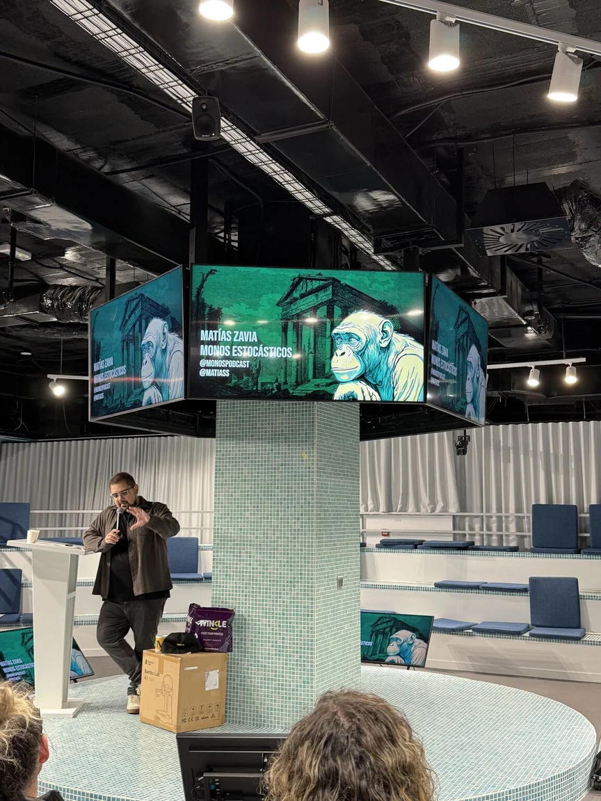

Impact Workshop III · Robotics
OPPLUS Training Campus, Málaga
Children built robots that drew their own patterns using a battery, a motor, and felt-tip pens. RoboRescue UMA led the build at this family workshop. MART Formula Student and UMA Racing Team brought the motorsport demonstrations.

